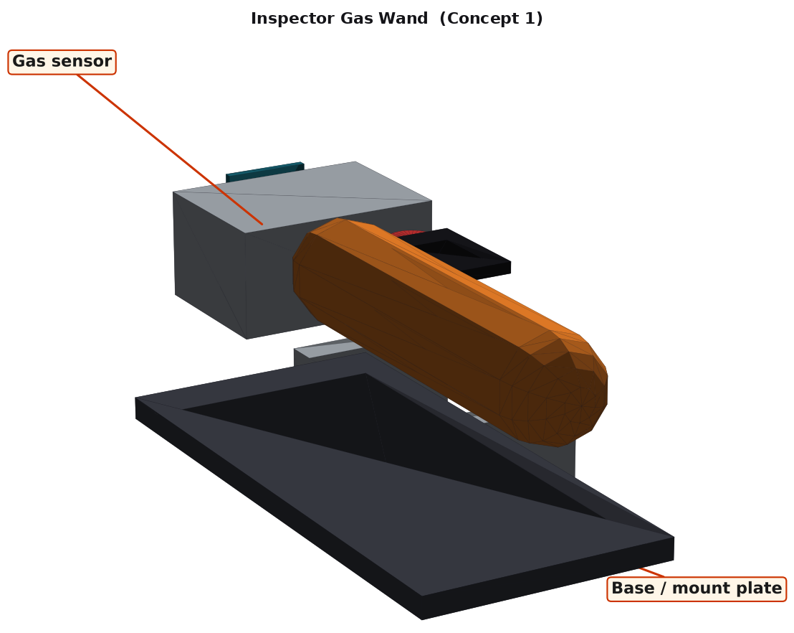
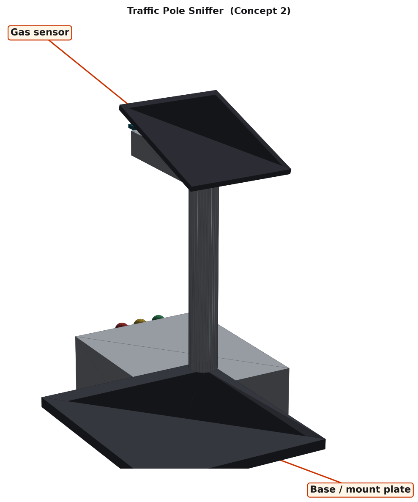
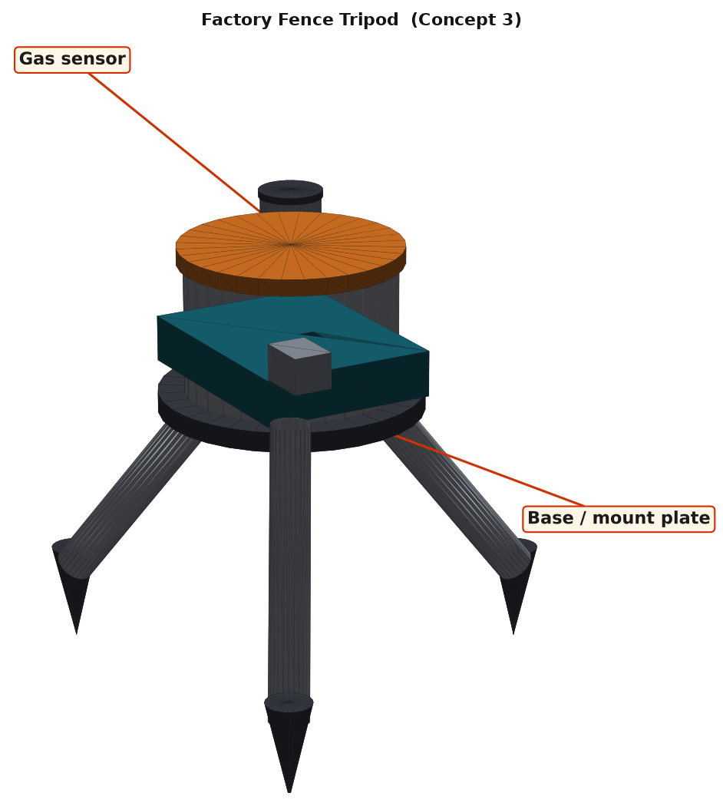
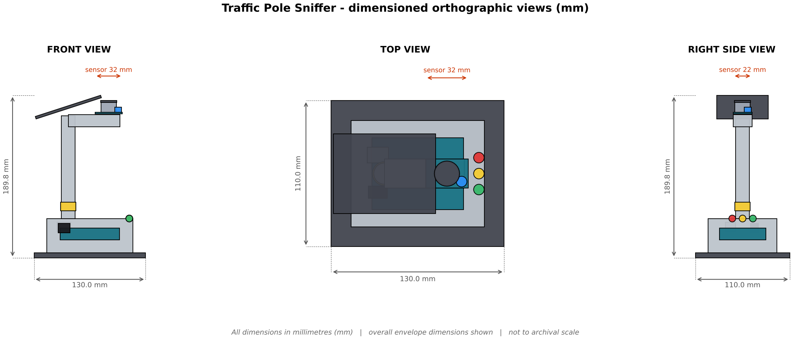
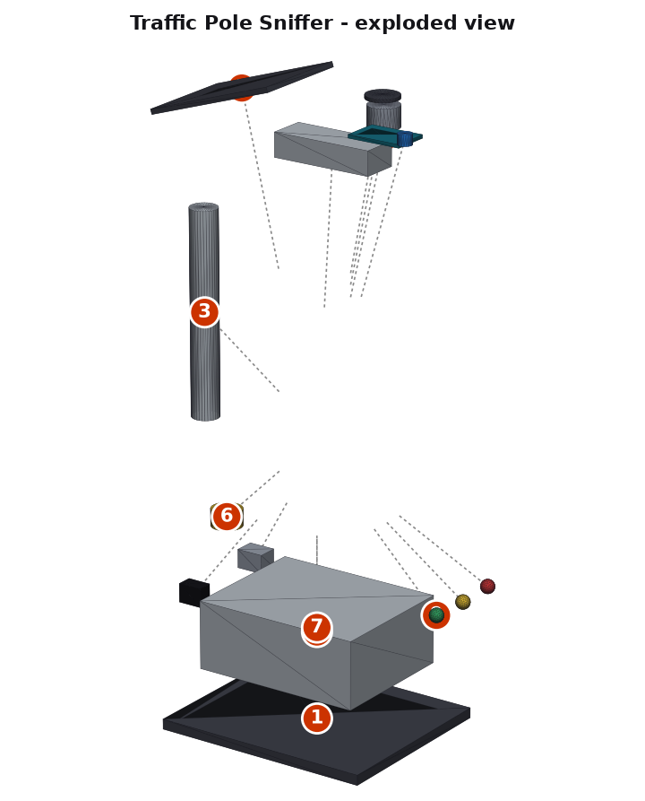

Design Brief
Context that frames the whole Criterion B response for this lesson.
Unit objective: Visualise gas sensor data to detect air pollution, harmful emissions or fire risks in urban spaces like roads, factories or buildings.
Problem context (community need): Industrial zones and busy roads can release harmful fumes, while gas leaks in buildings are dangerous. A pole or fence-mounted gas monitor gives neighbours an early warning.
Design task: Design a physical, 3D-printable / laser-cut housing that holds the Arduino and integrates the Gas sensor, so a community can read and use the data.
User: city councils, factory managers and residents.

Data Science Link
Your product exists to produce good data. This is how the unit's Four Big Ideas connect to the design.
What data does the sensor give? Measures harmful gas levels (e.g. carbon monoxide, methane, smoke) in indoor and outdoor urban spaces using analog values.
How the data is useful: Triggers real-time alerts for leaks and unhealthy air.
B1 · Design Specification
Each success criterion is described and justified using ACCESSFM. Rows marked are measurable. Size, mass and cost limits are calculated from the chosen 3D model.
| Specification | # | Success criterion | Justification |
|---|---|---|---|
| Aesthetics | 1.1 | Colour scheme of reflective yellow with dark grey. | A clear, friendly palette makes the device recognisable and welcoming in a community space. |
| 1.2 | Smooth, rounded external edges (fillet ≥ 2 mm) and tidy cables hidden inside the housing. | Rounded edges read as safe and professional; hidden wiring avoids snagging. | |
| Cost | 2.1 | Material + fabrication cost ≤ AED 80, not counting the Arduino and sensor already in the kit. | Based on PETG at about AED 0.12/g, MDF offcuts and hardware; keeps a class set affordable. |
| 2.2 | Re-uses the school's Arduino Uno and sensor module; no extra electronics to buy. | Avoids purchase orders and keeps the design compatible with the unit kit. | |
| Customer | 3.1 | Suits city councils, factory managers and residents: readable at a glance, no tools needed to read the result. | Design must meet the needs of the real community user, not just the student. |
| 3.2 | Opens or unscrews with one tool so the Arduino and sensor can be re-wired and the USB cable reaches a laptop. | Students need to re-flash the Arduino and re-collect data throughout the unit. | |
| Environment | 4.1 | At least 80% of structural material is recyclable PETG or reclaimed MDF offcuts. | PETG is recyclable and MDF offcuts come from the lab scrap bin (6 R's: Reduce, Reuse). |
| 4.2 | Printed + cut mass ≤ 300 g. | Lower mass means less filament, less print energy and an easier install. | |
| Size | 5.1 | Overall envelope ≤ 140 × 120 × 200 mm (L × W × H). | Small enough to fit on a bench, pole or desk and to be printed in sections. |
| 5.2 | Every printed part fits a 200 × 200 mm print bed; every cut part fits a 300 × 300 mm laser bed. | Matches the lab machines students will use. | |
| Safety | 6.1 | No exposed live parts on the pole, a stable base, and a clear alert for dangerous levels. | Reduces the chance of injury or damage when students and the public use it. |
| 6.2 | Low-voltage USB power only, no exposed sharp corners or live terminals. | Required for any student-built electronic product. | |
| Function | 7.1 | Raises an alert within 10 seconds of a reading above the chosen threshold. | Directly measures whether the device does the job in the scenario. |
| 7.2 | Mesh cap is open to the air on at least 40% of its area and is 2 m above the ground for the pole version. | The housing must help the sensor, not block or disturb it. | |
| 7.3 | The sensor's reading is available on the Arduino's serial port so Python can log, clean and graph it. | This is how the device joins the Data Science workflow. | |
| 7.4 | Sensor can be swapped in under 2 minutes with hand tools. | Sensors fail or need replacing in a busy classroom. | |
| Material | 8.1 | UV-stable PETG for the housing; steel or MDF base; waterproof sealing. | Material is matched to where the device will live (sun, damp, skin contact, heat). |
| 8.2 | Flat or simple parts use 3 mm laser-cut MDF; complex shapes are 3D printed. | Uses each lab machine for what it does best. |
🧩 Your turn — write your own B1
All: write 2 success criteria (one Aesthetics, one Safety) for your device.
Most: make at least one measurable (a number and a unit).
Some: justify it with research (a datasheet, a standard or a real product).
B2 · Design Ideas 3 different ideas
Three ideas that differ in form and mechanism, not just looks. Each sketch is an isometric render of the 3D CAD model with the sensor and base labelled.

Concept 1 — “Inspector Gas Wand”
A handheld wand for inspectors. Good for finding leaks, not continuous.
Envelope 167.5 × 70.0 × 68.5 mm · ≈ 79 g · ≈ AED 29

Concept 2 — “Traffic Pole Sniffer” SELECTED
A pole puts the sensor at breathing height beside the road, with a solar panel and status lights.
Envelope 130.0 × 110.0 × 189.8 mm · ≈ 165 g · ≈ AED 42

Concept 3 — “Factory Fence Tripod”
A spiked tripod can be moved along a factory fence. Portable but less stable in wind.
Envelope 152.6 × 134.0 × 158.5 mm · ≈ 77 g · ≈ AED 26
🧩 Your turn — sketch a 4th idea
All: describe a 4th idea in 2–3 sentences. It must differ by form or mechanism.
Most: say which ACCESSFM criteria it would score best and worst on.
Some: describe it so well a partner could draw it from your words alone.
B3 · Chosen Design
Each idea is rated 1 (poor) – 5 (excellent) against every ACCESSFM success criterion from B1.
| Category | What is being evaluated | Concept 1 Inspector Gas Wand | Concept 2 Traffic Pole Sniffer | Concept 3 Factory Fence Tripod |
|---|---|---|---|---|
| Aesthetics | Friendly, rounded, tidy | 4 | 4 | 3 |
| Cost | ≤ AED 80, reuses kit electronics | 4 | 4 | 4 |
| Customer | Easy for the community user to read and open | 3 | 4 | 4 |
| Environment | ≥ 80% recyclable material, light | 4 | 4 | 3 |
| Size | Fits ≤ 140×120×200 mm | 5 | 4 | 4 |
| Safety | Low voltage, no sharp edges | 4 | 4 | 4 |
| Function | Meets both measurable function targets | 3 | 5 | 4 |
| Material | Material suits where it lives | 4 | 4 | 4 |
| Total (/40) | 31 | 33 | 30 | |
🧩 Your turn — rate and justify
All: pick one rating you disagree with, give your own 1–5 and say why.
Most: re-total the scores. Does the chosen design still win?
Some: write a 3-sentence justification in the style above for your three ideas.
B4 · Detailed Plans
Dimensioned CAD output for the chosen design: orthographic (front / top / right side), exploded view, and Bill of Materials.


Bill of Materials (BOM)
| # | Part | Material / source | Approx. size | Qty | Fabrication method |
|---|---|---|---|---|---|
| 1 | Base plate | 3mm MDF | 130 x 110 x 6 mm | 1 | Laser-cut |
| 2 | Base housing | PETG | 100 x 80 x 40 mm | 1 | 3D-printed (20% infill) |
| 3 | Pole | PETG | 120 x 16 x 16 mm | 1 | 3D-printed (20% infill) |
| 4 | Head arm | PETG | 60 x 22 x 14 mm | 1 | 3D-printed (20% infill) |
| 5 | Solar panel | Hardware | 80 x 60 x 3 mm | 1 | Off-the-shelf |
| 6 | Accent band | PETG | 18 x 18 x 10 mm | 1 | 3D-printed (20% infill) |
| 7 | Arduino Uno R3 + breadboard | Sensor / Arduino kit part | 69 x 54 x 14 mm | 1 | Kit component - reused |
| 8 | Gas sensor module (MQ type) | Sensor / Arduino kit part | 32 x 22 x 2 mm | 1 | Kit component - reused |
| 9 | Status LED | Sensor / Arduino kit part | 8 x 8 x 8 mm | 3 | Kit component - reused |
| 10 | M3 x 12 bolt & nut sets | Hardware | M3 x 12 mm | 10 | Off-the-shelf |
| 11 | Cable ties & wiring set | Hardware | - | 1 | Off-the-shelf |
Estimated printed + cut mass: ≈ 165 g (limit 300 g). Estimated cost: ≈ AED 42 (limit 80). Overall envelope: 130.0 × 110.0 × 189.8 mm.
🧩 Your turn — dimension your own idea
All: list 3 real dimensions (mm) your design needs.
Most: list at least 5 BOM rows (part, material, qty, method).
Some: describe one feature to add to your exploded view (a wiring channel, a hinge, a snap-fit).
Make it your community's
Pick three places near your school to monitor. Which would you expect to read highest, why, and how would you verify it with data?
🧩 Your turn — data & community challenge
Pick three places near your school to monitor. Which would you expect to read highest, why, and how would you verify it with data?
All: answer the question in 3–4 sentences.
Most: name the chart type you would use and why.
Some: describe one design change to your device so the data is more reliable.
Downloads & TinkerCAD
STL files for all three ideas and the chosen design, ready for TinkerCAD or any slicer.
- Go to tinkercad.com and sign in.
- Create a new 3D Design.
- Click Import, choose an
.stlfile, set units to mm, then Import. - Measure, recolour, duplicate or merge it with your own shapes, then Export → .STL for the slicer.
Modelling Worksheet — Making the Physical Model
Follow in order. Lab tools: 3D printer (PETG), laser cutter, hex driver, 320-grit sandpaper, hot glue gun.
- Check the CAD: open the chosen STL in TinkerCAD or your slicer, set units to millimetres and confirm the envelope is 130.0 × 110.0 × 189.8 mm (limit 140 × 120 × 200 mm).
- Slice the printed parts (Accent band, Base housing, Head arm, Pole) in Cura/PrusaSlicer: PETG, 0.2 mm layers, 15–20% infill, supports only where an overhang needs them.
- Laser-cut the MDF parts (Base plate) from 3 mm MDF using the top orthographic view as the footprint.
- De-burr and sand every printed part (320 grit); check the sensor opening and screw holes so nothing binds or blocks the sensor.
- Fit the sensor: Fix the gas sensor can facing outward on the head arm, with the mesh cap exposed and a drip loop in the cable.
- Assemble following the numbered exploded view and the BOM: fasteners finger-tight first.
- Wire and test: connect the sensor to the Arduino, upload your test sketch (Criterion C), and watch the readings in the Serial Monitor.
- Install in the community location from your design brief and confirm the sensor sees what it should.
- Function-test against specifications 7.1 and 7.2: Raises an alert within 10 seconds of a reading above the chosen threshold. Record the results in your portfolio.
- Finish: spray or vinyl-wrap in the colour scheme from specification 1.1, then re-test.
Quiz — Gas Safety for Cities
Kahoot-style, timed, auto-marked. Your score is saved once you log in above.
🏁 Ready to play?
10 questions · 15 seconds each · lesson content + Criterion B and Data Science skills.
Reflection prompts
- Which ACCESSFM category was hardest to satisfy with all three of your ideas, and why?
- How did the way the sensor is housed change the quality of your data?
- Where might your device still fail the Safety criterion in real use, and how would you test for it?